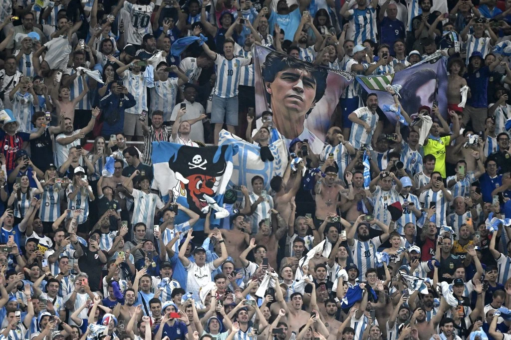
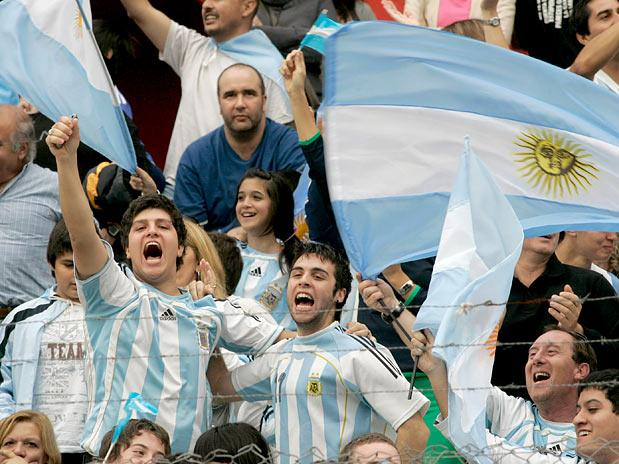

Argentina
A história do futebol africano na Copa do Mundo é uma jornada fascinante de superação, talento puro, festas inesquecíveis nas arquibancadas e momentos dramáticos que ficaram gravados na memória de qualquer fã do esporte. O continente passou do status de "zebra" nas primeiras edições para se tornar uma força temida e respeitada globalmente.
Seleção
HISTÓRIA
A melhor Copa
do Mundo
Argentina
A melhor campanha da Argentina em uma Copa do Mundo aconteceu em 2022, quando a seleção conquistou seu terceiro título mundial em uma das finais mais emocionantes da história. Após perder para a Arábia Saudita na estreia, a Argentina se recuperou, eliminou fortes adversários e venceu a França na final após um empate por 3 a 3, conquistando o título nos pênaltis.
1986
Em 1986, a Argentina conquistou sua segunda Copa do Mundo, realizada no México, com uma campanha liderada por Diego Maradona. O craque foi o grande destaque do torneio, protagonizando momentos inesquecíveis, como o jogo contra a Inglaterra nas quartas de final, em que marcou o polêmico gol da “Mão de Deus”.
2022
Já em 2022, a Argentina viveu outro momento histórico ao conquistar sua terceira Copa do Mundo, no Catar. Mesmo após perder para a Arábia Saudita na estreia, a equipe se recuperou e fez uma campanha memorável, liderada por Lionel Messi.


Momentos inesquecíveis
01
A Argentina conquistou sua primeira Copa do Mundo jogando em casa. Na final, venceu a Holanda por 3 a 1 na prorrogação, conquistando um título histórico diante de sua torcida.
02
Contra a Inglaterra, Maradona marcou um gol histórico após driblar vários adversários desde o meio-campo, considerado por muitos o gol mais bonito da história das Copas.
03
Após uma grande campanha, a Argentina chegou à final da Copa de 2014, mas perdeu para a Alemanha por 1 a 0 na prorrogação, ficando muito perto do título.
04
A Argentina conquistou sua terceira Copa do Mundo ao vencer a França nos pênaltis após um empate por 3 a 3 em uma final histórica. O título marcou a consagração de Lionel Messi no futebol mundial.
Detalhes
culturais do país